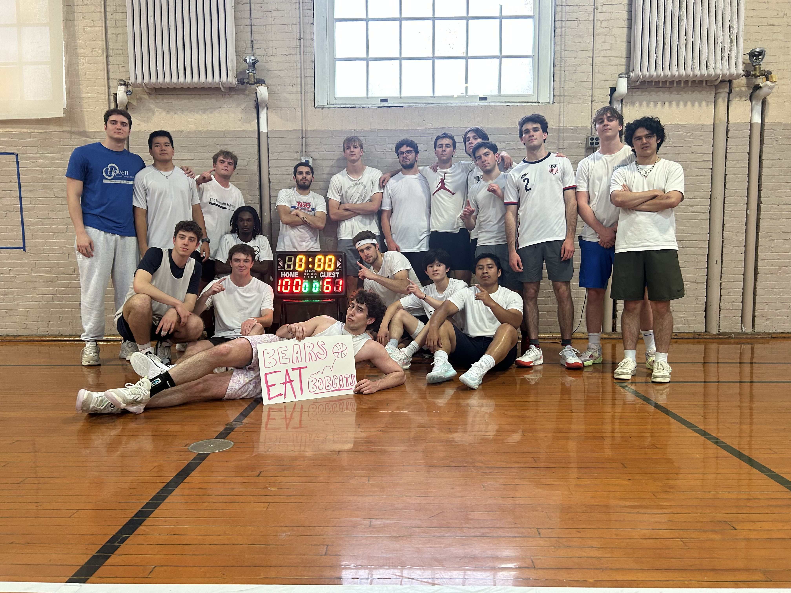
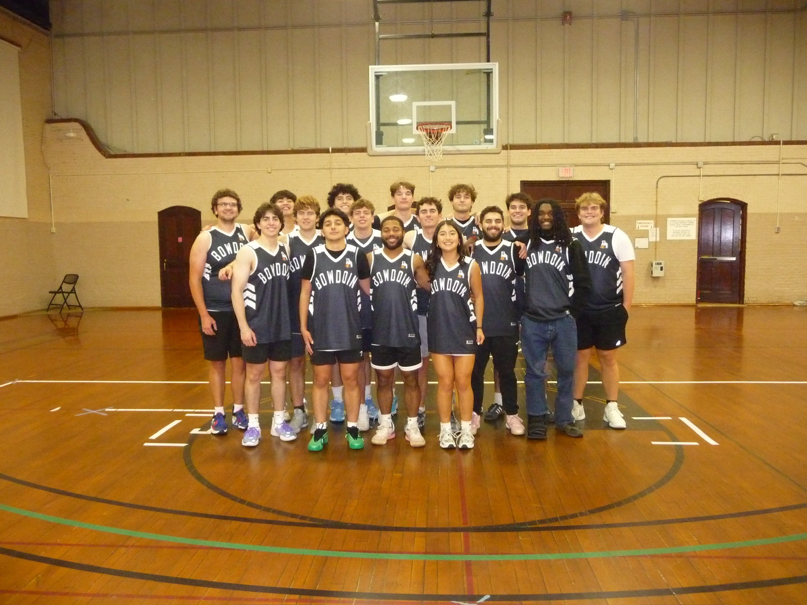
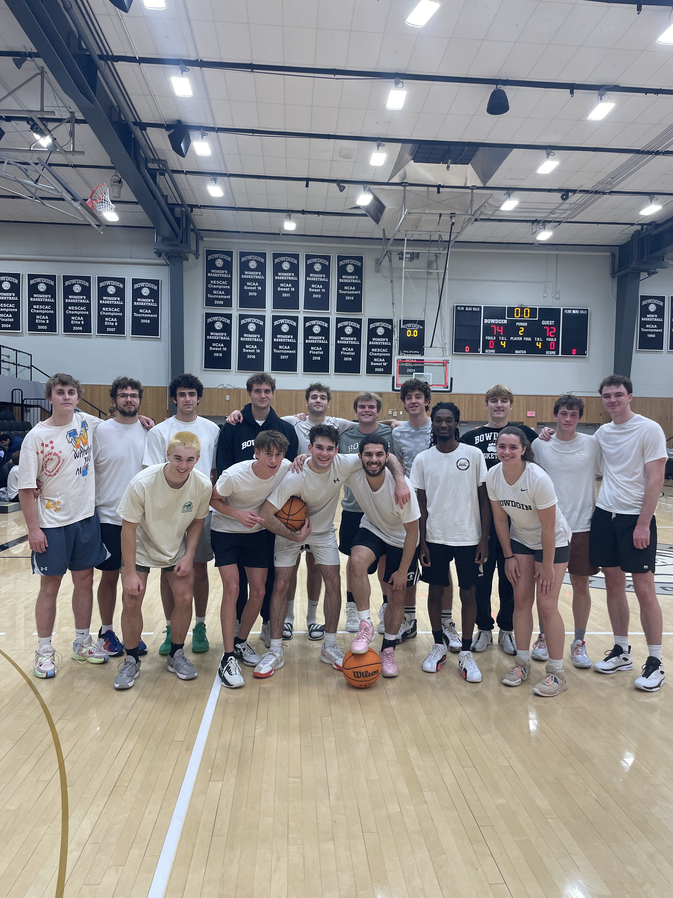
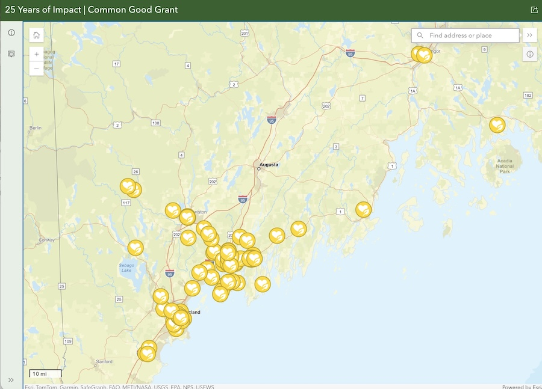

I led 1+ year-long negotiations with the college administration over insurance contracts and court space availability to get the club basketball team officially chartered. In the two years since, I've worked hard to establish a warm, loving team culture that brings in people from all over campus.
I enrolled our club in a national league, built out team cultural norms and practice routines, gameday strategies and tactics, and improved our administrative relationship to ensure this club survives my Bowdoin tenure. I've left the club in good hands, and I hope it continues to serve as a warm, open community to hoopers all over campus!




I served on this committee my sophomore year of college, helping fundraise $30,000 and review grant applications from nonprofits in the Midcoast Maine area. I made a site visit out to Lewiston to listen to a group of Somalian women who were working on a support and community network in Lewiston talk about the financial challenges they were facing.
I managed to convince and advocate to the committee — under significant resistance — that this was one of the most worthy causes we reviewed. It's one of the moments in my life where I'm most proud of the outcome I advocated for.
I spent two years making weekly visits to the local elementary school in Topsham, Maine. My "little brother" and I fostered a close relationship, and I tried to serve as the best role model I could in my interactions with his peers and teachers.
I'll miss hanging out at recess with those kids — but I certainly won't miss the contentious role of referee in 4-square. Ever again.